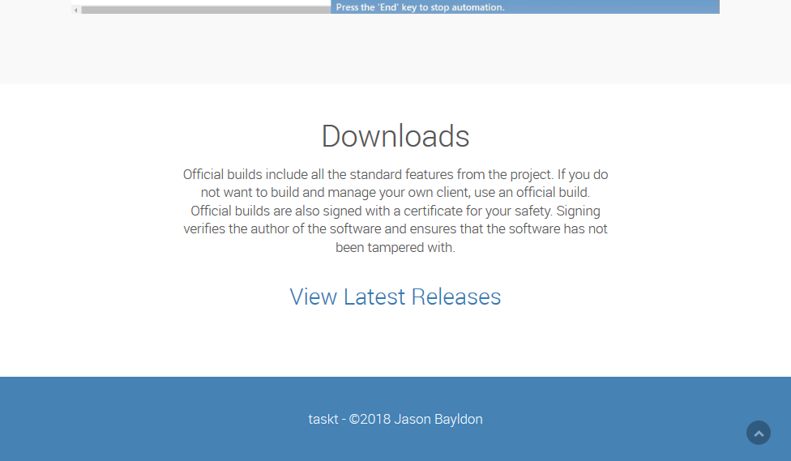
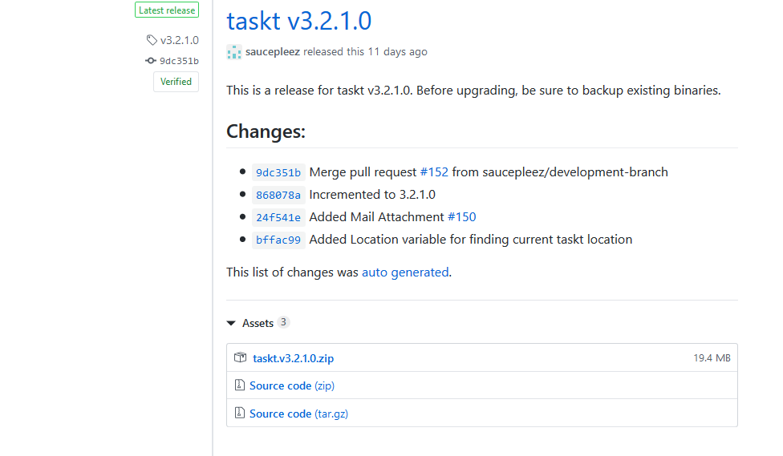
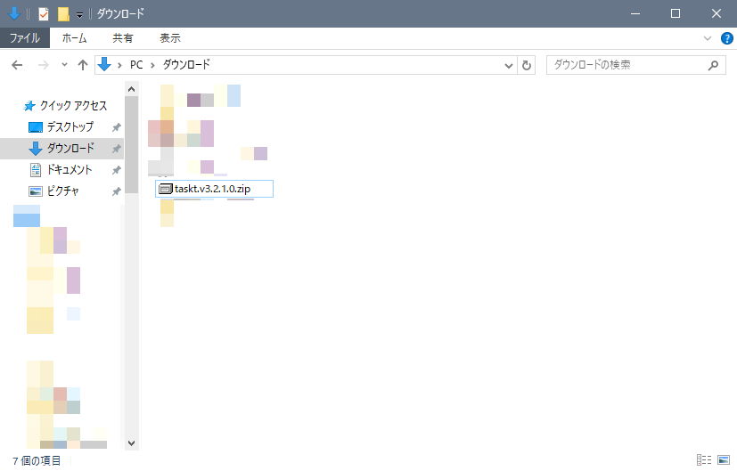
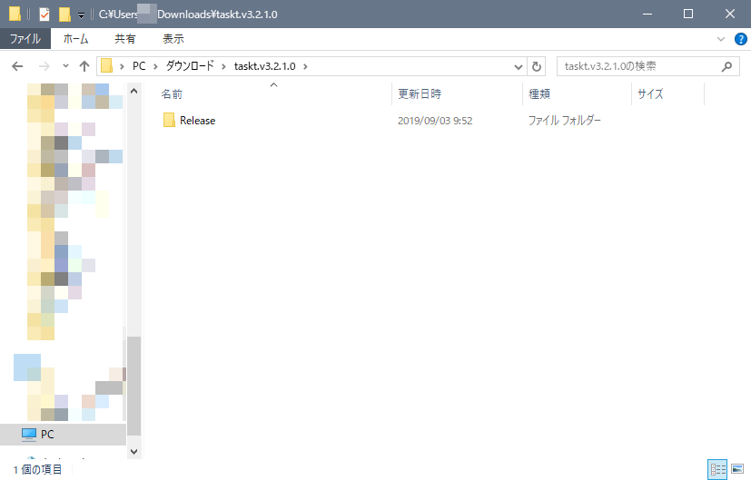
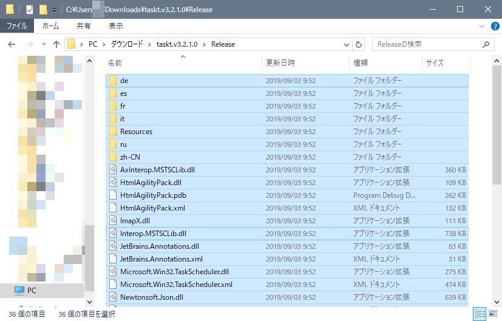
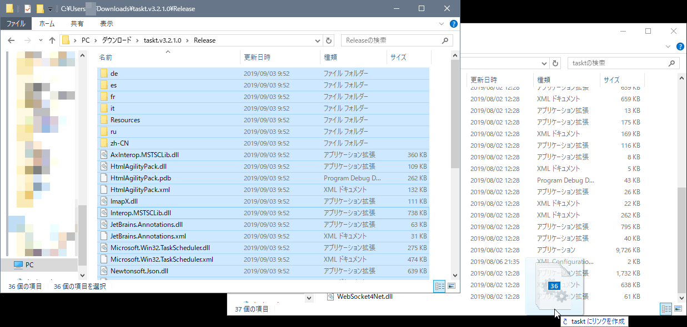
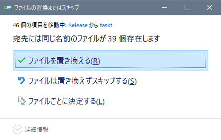
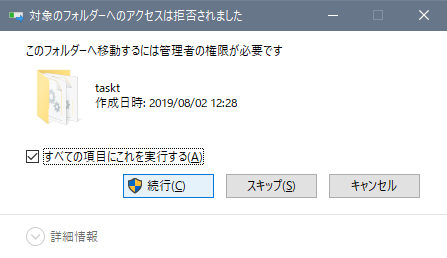
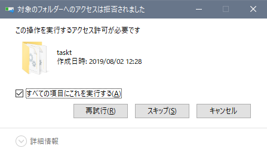
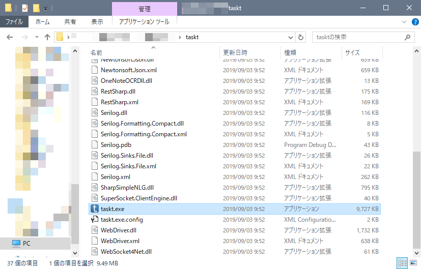

アップデート
taskt は無料なので、アップデート (バージョンアップ) 作業も手動で行わなければなりません。
ただし、インストール方法とほぼ同じで、大体下のような手順です。
- 新しいバージョンの taskt のファイルをダウンロード
- taskt のファイルを展開する
- taskt のフォルダーに新しいバージョンのファイルをすべて上書きする
アップデートの前に
アップデートの前に、以下の点を確認してください。
- taskt を起動していない
- taskt のロボットが動いていない
ほとんどの場合、taskt の画面が表示されていなければ、大丈夫だと思います。
新しいバージョンのダウンロード
残念ながら、新しいバージョンが公開されても通知は来ませんので、定期的に taskt のページへアクセスし確認するしかありません。
アップデートが公開された気分がしたら、taskt のページへアクセスし、下へスクロールします。
そして、一番下にある View Latest Relases をクリックします。

すると、taskt の各バージョンをダウンロードできるページへ移動します。
ここで、新しいバージョンが公開されているのを確認できたら、少しスクロールします。
ここでは、バージョン 3.2.1.0 をダウンロードするので、Assets の下にある taskt.v.3.2.1.0.zip をクリックします。

ダウンロードが始まり、100 % ダウンロードが完了するまで待ちます。
新しいバージョンの展開
ほとんどの場合、ダウンロードされたファイルは「ダウンロード」フォルダーにあるので、そこを開きます。
そして、先ほどダウンロードした taskt のファイルがあるのを確認します。下の画像の場合は taskt.v.3.2.1.0.zip がダウンロードしたファイルです。

taskt のファイルを右クリックし、すべて展開をクリックします。

展開先の選択とファイルの展開という画面が表示されるので、展開をクリックします。

少し待つと、展開が完了し、下の画面のように Release というフォルダーが表示されます。あとの作業で使うので、この画面はまだ閉じないでください。

ファイルのコピー
現在 taskt がインストールされているフォルダーを開きます。
このページのインストールの方法の説明のとおり行った場合、C:\Program Files\taskt を開きます。

次に、先ほど表示された Release フォルダーをダブルクリックし、中身を表示します。
次に、Ctrl キーを押しながら A を押し、すべてのファイルを選択します。

そして、先ほど開いておいた C:\Program Files\taskt へドラッグ&ドロップし、新しいファイルを移動させます。

下のような確認の画面が表示されたら、ファイルを置き換えるをクリックします。

さらに、下のような画面が表示されたら、すべての項目にこれを実行する にチェックを入れ、続行をクリックします。


動作確認
移動が完了したら、C:\Program Files\taskt の、taskt をダブルクリックし実行します。
おそらく普段通り taskt が実行すると思います。実行すればアップデート作業は終了です。

気になるようなら、アップデート後にバージョンを確認すると良いでしょう。
実行しなかったら
管理人は遭遇したことがないのですが、もしアップデート作業後に taskt が起動しなくなったら、以下のような作業を行ってください。
- C:\Program Files にある taskt のフォルダーを削除する
- ダウンロードフォルダーにある、新しいバージョンの taskt のファイルを削除する
- taskt のページへ移動し、再度 taskt をダウンロードする
- 新しくダウンロードしたファイルでインストールをやり直す
それでもダメでしたら、今まで正常に動作していたバージョンをダウンロードし、インストールしてください。